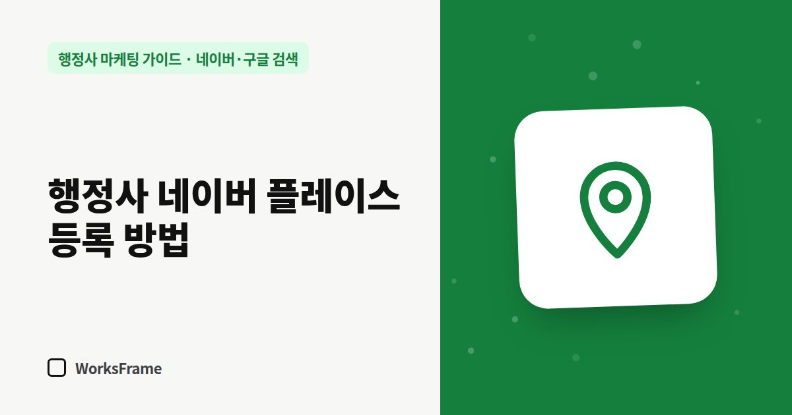

네이버·구글 검색
행정사 네이버 플레이스 등록 방법 — 스마트플레이스 단계별 정리
한 줄 답
네이버 스마트플레이스에서 ‘업체 신규 등록 → 업종 선택 → 사업자등록증 제출 → 정보 입력’ 순서로 무료 등록합니다. 심사는 보통 영업일 기준 2시간~5일 걸립니다.

“○○동 행정사”처럼 지역으로 찾는 고객에게 가장 먼저 보이는 것은 네이버 지도와 플레이스입니다. 등록 자체는 무료이고, 사업자등록증만 있으면 혼자서도 할 수 있습니다.
2026년 9월 기준입니다. 화면 구성과 심사 기준은 바뀔 수 있으니 스마트플레이스 안내를 함께 확인하세요.
준비물
- 네이버 계정 (사무소 운영용으로 쓸 계정)
- 사업자등록증 (PDF 또는 이미지)
- 사무소 정보 네 줄: 사무소명, 도로명 주소(호수까지), 대표 전화, 상담 시간
- 사무소 사진 몇 장 (외관, 입구, 상담 공간)
등록 단계
- 네이버 스마트플레이스에서 업체 신규 등록
- 업종 선택 — 행정사 관련 업종을 검색해 선택
- 서류 제출 — 사업자등록증 업로드
- 기본 정보 입력 — 이름, 전화, 주소, 영업시간, 소개, 대표 키워드, 사진
토스플레이스의 안내에 따르면 심사는 보통 영업일 기준 2시간에서 최대 5일이 걸리고, 사업자등록증 하나에 원칙적으로 업체 하나를 등록합니다.
등록 직후 할 일
- 홈페이지 주소 입력 — 플레이스에서 홈페이지로 넘어오는 통로
- 카카오톡 채널·예약 연결 — 쓰고 있다면
- 소개글을 업무 중심으로 다시 쓰기 (채우는 법)
- 홈페이지·명함의 정보와 한 글자까지 같은지 확인
흔한 실수
| 실수 | 결과 |
|---|---|
| 사업자등록증과 다른 상호로 입력 | 심사 반려 또는 수정 요청 |
| 호수 없이 건물 주소만 | 같은 건물 다른 업체와 헷갈림 |
| 제작 업체 계정으로 등록 | 나중에 정보 수정이 어려움 (명의) |
| 등록 후 방치 | 오래된 사진·시간이 신뢰를 떨어뜨림 |
등록한다고 바로 위에 뜨지는 않습니다
등록은 “지도에 이름을 올리는 것”이고, 검색 결과에서 얼마나 위에 보이는지는 정보의 충실도, 고객 반응, 거리 등 여러 요소가 함께 작용합니다. 순위를 보장한다는 업체는 계약 전에 확인하세요.
자주 묻는 질문
업무신고 전에 등록해도 되나요?
사업자등록증이 필요하고, 실제로 영업을 시작하기 전에 노출되면 헛걸음하는 고객이 생길 수 있습니다. 업무신고와 사업자등록을 마친 뒤 등록하세요.
공유오피스 주소로도 등록되나요?
사업자등록증의 주소로 등록합니다. 같은 주소에 업체가 많으니 호수와 사무소명을 정확히 입력하세요.